01
Segurança
Sem ordem não há progresso. Pacificar o Brasil e libertar as famílias de bem.
PLANO DE GOVERNO · SEGURANÇA
Canal oficial no WhatsApp. Este site não solicita dados pessoais nesta etapa. Segundo a Meta, seguir o canal não revela o seu número.
Sem ordem
não há progresso.
Vamos tirar
o Brasil do vermelho.
O Brasil
vai vencer.
Nenhum país se levanta sozinho. Quem levanta um país é gente. É o pai que sai de casa às cinco da manhã e volta quando os filhos já dormiram. É o caminhoneiro na estrada, o professor na sala, o policial na esquina, o pequeno comerciante que abre as portas todos os dias.
Patriotismo não é gritar mais alto. É não desistir. É acreditar que este país pode voltar a ser um Brasil grande de verdade: onde a lei vale para todos e o dinheiro do seu trabalho volta para o seu bolso, não para a máquina.
Chegou a hora. O Brasil vai vencer!
Conheça o Plano de GovernoSete frentes, uma para cada parte da população. Role a página: os cards andam sozinhos.
Sem ordem não há progresso. Pacificar o Brasil e libertar as famílias de bem.
Vamos tirar o Brasil do vermelho, com propostas contra os obstáculos que pesam na vida do brasileiro.
Liberdade e autonomia: escolha, autonomia e liberdade para a mulher.
Cuidar de quem construiu o caminho: aposentadoria protegida e acesso à saúde.
Simplificar para prosperar: menos burocracia, menos impostos, crédito e capacitação.
Mortalidade zero na fila. O Plano Real do SUS.
Campo forte, Brasil forte: infraestrutura logística, tecnologia e segurança jurídica.
para sua família voltar para casa em paz
Nenhuma família vive, trabalha ou prospera sob o domínio do medo.
Mais da metade das famílias brasileiras é chefiada por uma mulher. Quando ela é protegida, capacitada e tem renda própria, não é só a vida dela que muda: é a da família inteira.
um único lugar para resolver tudo
tudo na palma da mão
conectar pessoas é conectar oportunidades
a amiga virtual que acompanha cada etapa da jornada
a tecnologia vai impedir que a violência aconteça
da proteção ao patrimônio
atitude que vira benefício
Informação exige prova: o que foi dito, o que os dados mostram e uma conclusão direta para compartilhar.
O Plano de Governo não apresenta nenhuma proposta para extinguir o piso nacional.
Pagar a aposentadoria dos brasileiros é uma das primeiras obrigações do governo. É um direito garantido por lei.
Foi no governo do pai de Flávio que o Bolsa Família teve o maior aumento da história do programa.
O Plano de Governo propõe retomar o programa Casa Verde e Amarela.
O Plano propõe desenvolver a cadeia produtiva desses minerais no Brasil.
Flávio Bolsonaro afirmou que não fará economia em cima dos mais pobres e dos aposentados.
Acompanhe os próximos compromissos da campanha e saiba quando ele estará na sua região.
A agenda está sendo atualizada. Acompanhe o BolsoZap para receber os próximos compromissos.
Entre no BolsoZapNotícia, política, humor, entretenimento, bastidores e o Brasil real. Se a transmissão ainda não começou, visite o canal para ativar as notificações e conferir os últimos vídeos.
Abrir canal no YouTubeLula perguntou, né? Eu vou responder!!
11 de out. de 2026Bolsa Família vai ficar melhor!
10 de out. de 2026Aposentadorias serão reajustadas acima da inflação
10 de out. de 2026O povo será o centro do nosso governo!
10 de out. de 2026Nasceu dentro dos muros da Academia Militar das Agulhas Negras, em Resende (RJ). Cresceu vendo o pai, Jair Bolsonaro, dedicar quase três décadas da vida à política antes de chegar à Presidência da República.
Aos 21 anos, foi às urnas pela primeira vez e ouviu o Rio de Janeiro responder: 31.293 votos e o título de deputado estadual mais jovem já eleito na história do estado.
Formou-se advogado, com especialização em Políticas Públicas (IUPERJ) e em Empreendedorismo (FGV). Presidiu a Comissão de Segurança Pública e foi autor da Lei 7.809/2017.
Em 2016, disputou a Prefeitura do Rio e ficou em 4º lugar. Anos depois, abriu mão do próprio palanque para construir 92 outros, um em cada município fluminense.
Em 2018, o Rio de Janeiro o levou ao Senado com mais de 4 milhões de votos. Autor da PEC 32/2019 e de projetos sobre registro de armas e o fim das saidinhas.
No Senado, presidiu a Comissão de Segurança Pública. É autor do livro “Jair Messias Bolsonaro — Mito ou Verdade”, um retrato de filho sobre pai.
Marido e pai de duas filhas. É por elas, e por cada família brasileira, que continua de pé, defendendo o direito de acreditar, de ter, de se proteger e de ver o Brasil crescer.
Por isso, vem com Flávio Bolsonaro! O Brasil vai vencer!
Precisamos de um Congresso de direita para mudar o Brasil. Conheça os candidatos ao Senado apoiados por Flávio Bolsonaro, estado por estado.
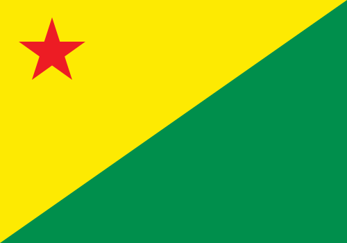
Acre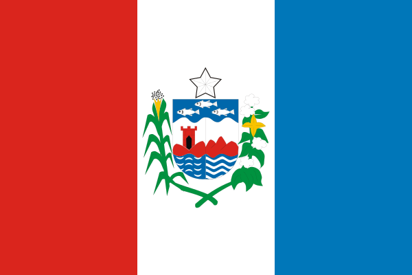
Alagoas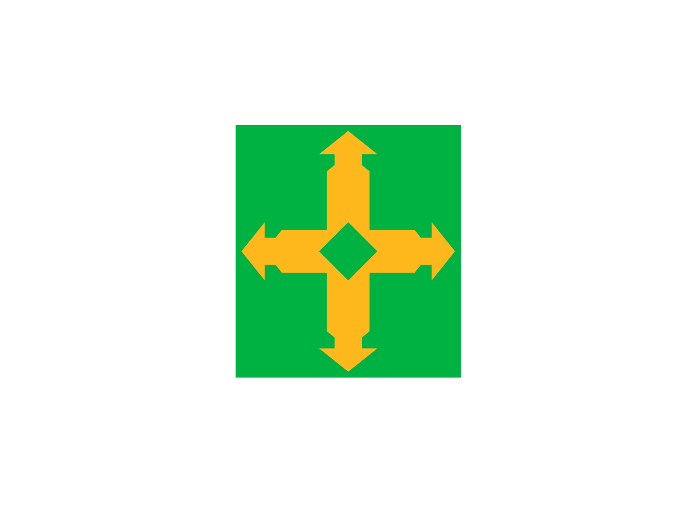
Distrito Federal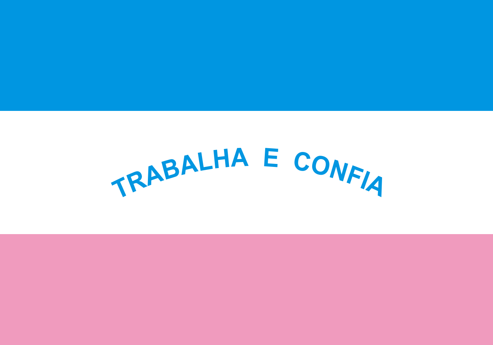
Espírito Santo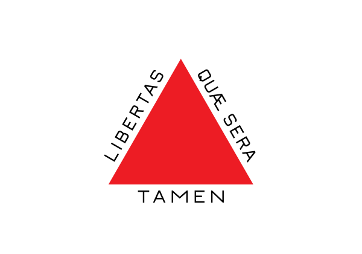
Minas Gerais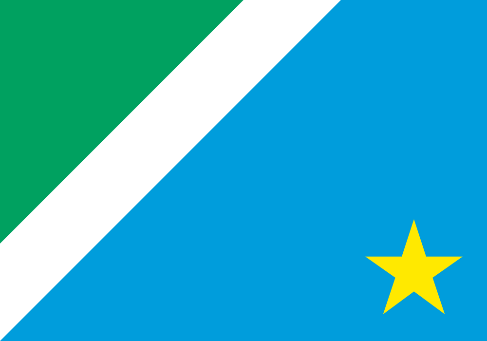
Mato Grosso do Sul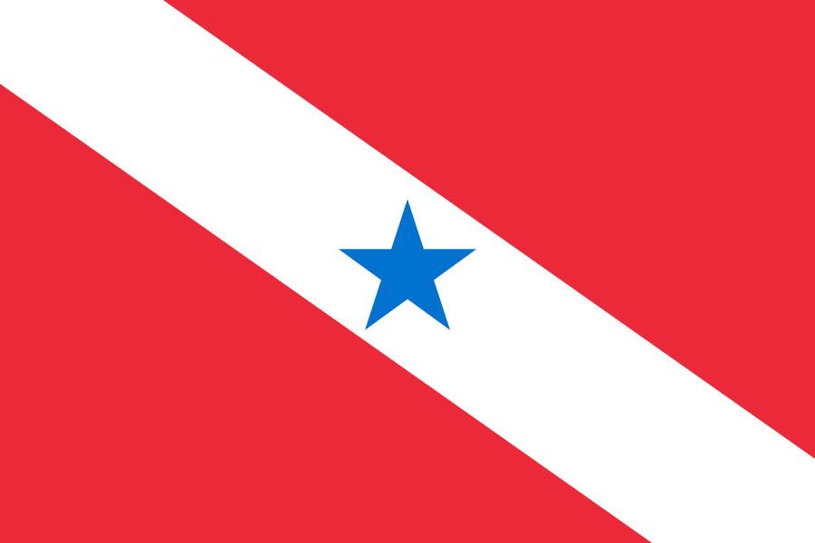
Pará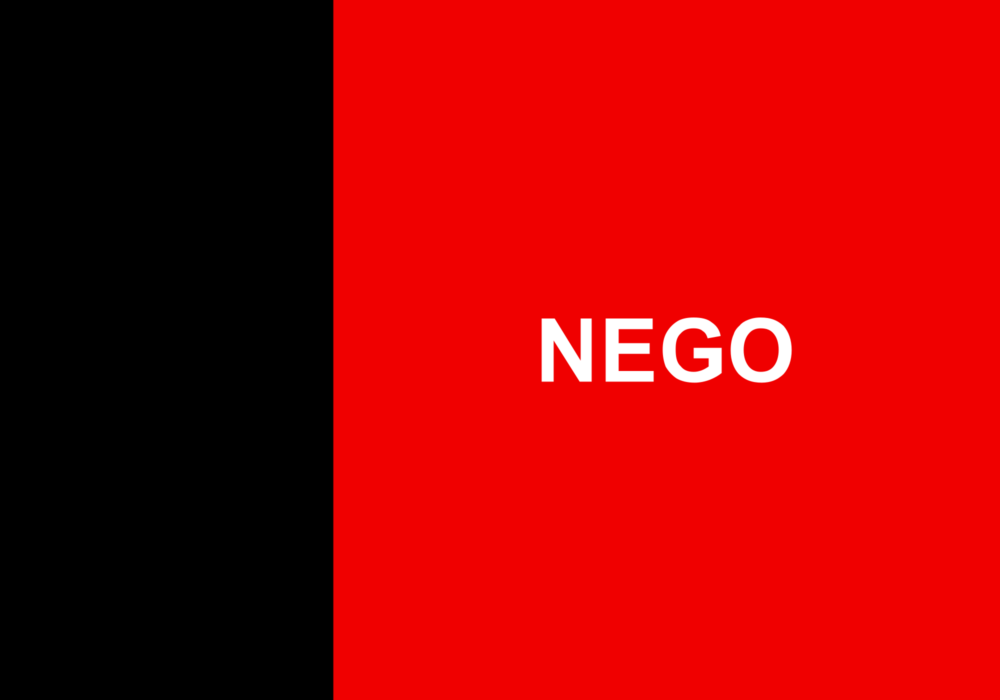
Paraíba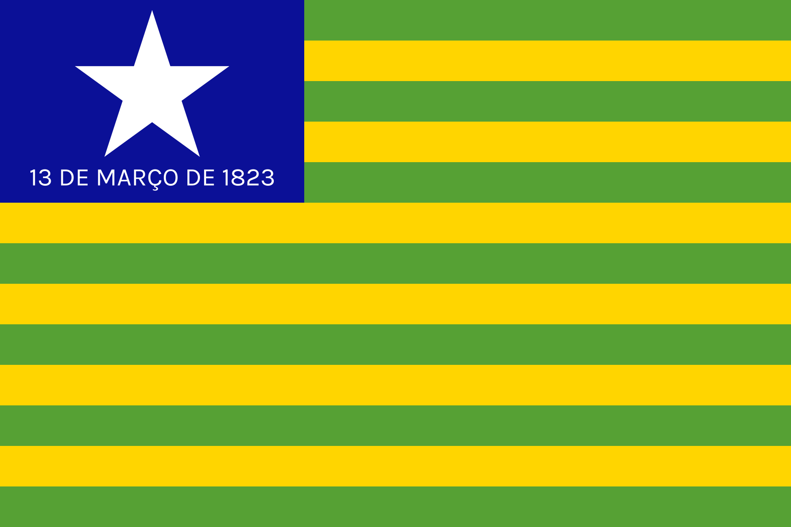
Piauí Paraná
Paraná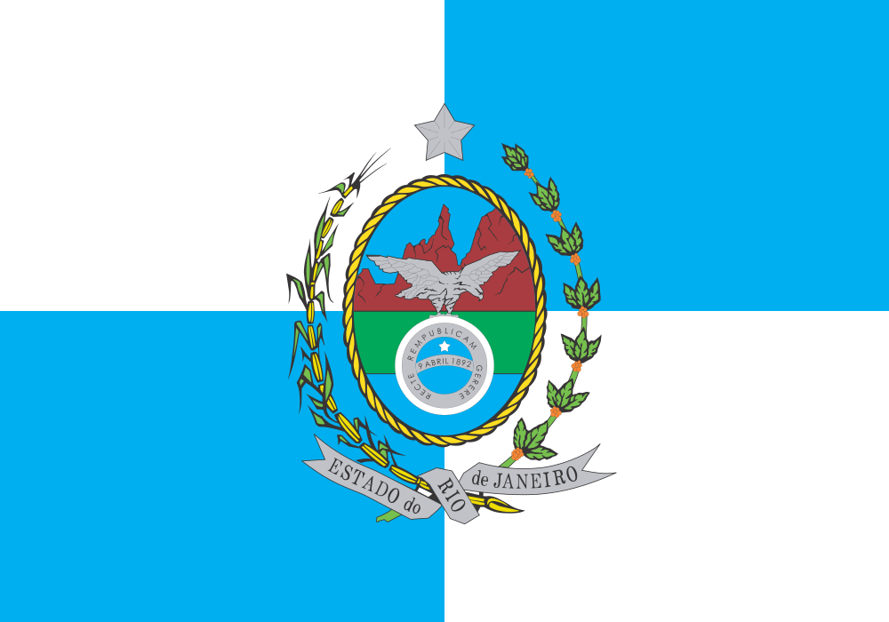
Rio de Janeiro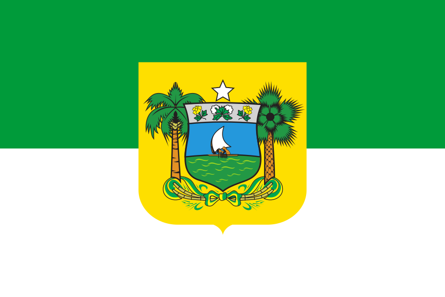
Rio Grande do Norte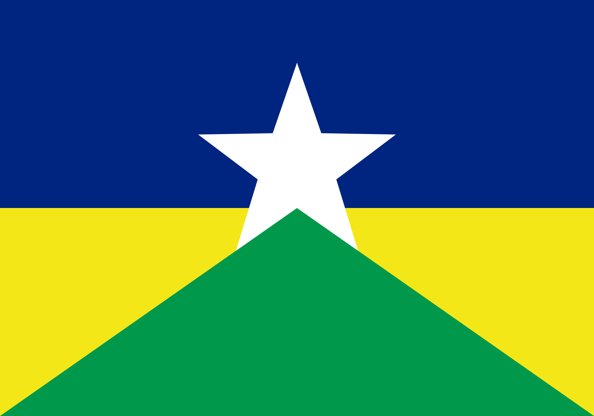
Rondônia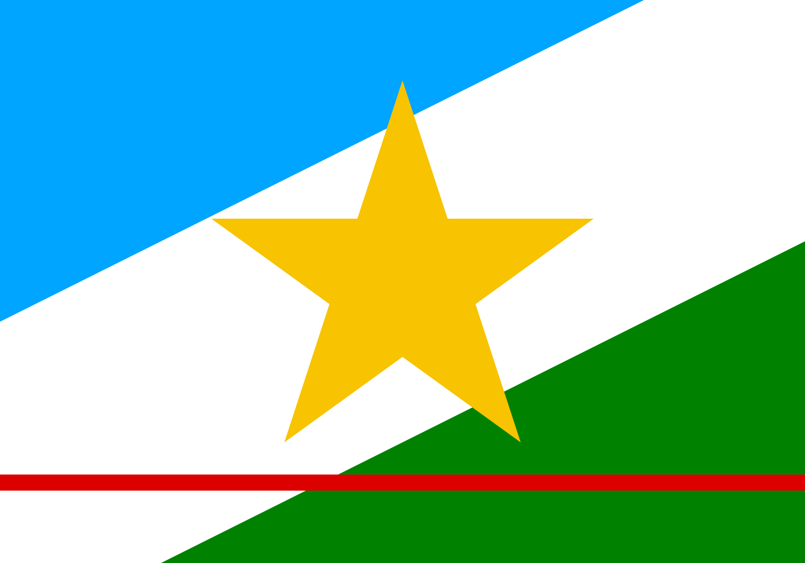
Roraima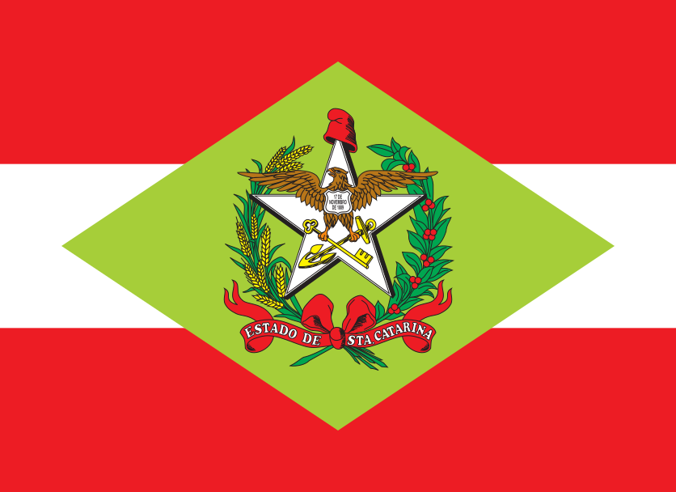
Santa Catarina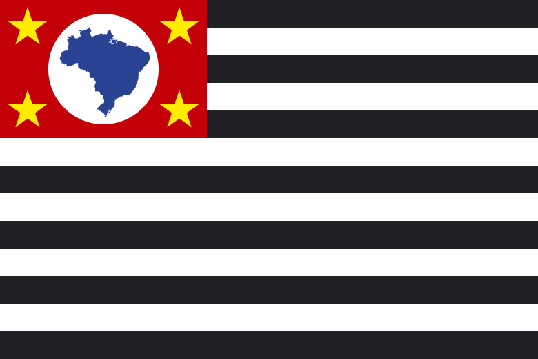
São PauloOuça quando quiser e baixe para compartilhar. (Prévia visual do player.)
Tudo pronto para levar a campanha mais longe. Escolha, clique e baixe.
Não precisa de palanque nem de microfone. Precisa de você no grupo da sua cidade. Lá dentro você recebe em primeira mão o que a campanha vai fazer e ajuda a espalhar a verdade para o seu bairro. É de graça, é rápido.
Entrar no BolsoZap